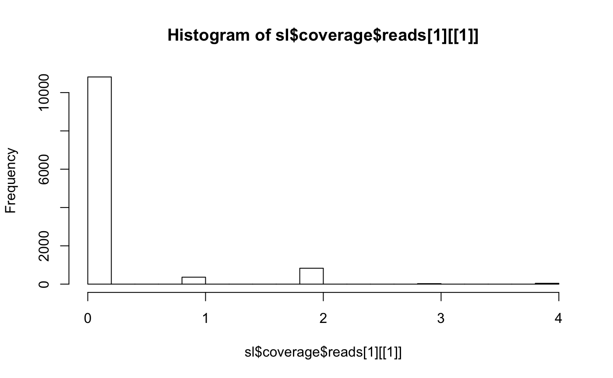

One thing you might want to do with metagenomics data is to identify the species present in your sample. Here we will use SLIMM which is a binning based classifier similar to Kraken.
The reason we often use SLIMM is that it generates cleaned species-level coverage maps as a side effect which we use extensively.
## Registered S3 methods overwritten by 'ggplot2':
## method from
## [.quosures rlang
## c.quosures rlang
## print.quosures rlang## Registered S3 method overwritten by 'R.oo':
## method from
## throw.default R.methodsS3## Also loading:## - dada2=1.12.1
## - data.table=1.12.2
## - ggplot2=3.1.1
## - magrittr=1.5
## - phyloseq=1.28.0
## - ShortRead=1.42.0
## - yaml=2.2.0## Found tools:## - minimap2=2.15-r905
## - slimm=0.3.4
## - samtools=1.9##
## Attaching package: 'mbtools'## The following object is masked _by_ 'package:BiocGenerics':
##
## normalizeWe will use our shotgun data again since the reference genomes are also included in the SLIMM database. For real data you will want to align against the full SLIMM database of ~15K genomes.
Download instructions will come soon :/
For now we will only use the SLIMM taxonomy mapping database which is delivered with mbtools as well.
which will save the db in the folder refs.
One advantage of SLIMM is that it is relatively agnostic to the alignment program. So we can use our normal alignment workflow.
fi <- system.file("extdata/shotgun", package = "mbtools") %>%
find_read_files()
ref <- system.file("extdata/genomes/zymo_mock.fna.gz",
package = "mbtools")
alns <- align_short_reads(
fi,
threads = 3,
reference = ref,
use_existing = FALSE)## INFO [2019-05-25 22:20:38] Aligning 3 samples on 3 threads. Keeping up to 100 secondary alignments.
## INFO [2019-05-25 22:20:40] Finished aligning even1.
## INFO [2019-05-25 22:20:42] Finished aligning even2.
## INFO [2019-05-25 22:20:44] Finished aligning even3.SLIMM is again wrapped by a workflow so we can use it passing in an alignment artifact and a configuration.
## $reports
## NULL
##
## $bin_width
## [1] 1000
##
## $relative_cutoff
## [1] 0
##
## $database
## [1] "/home/cdiener/R/x86_64-pc-linux-gnu-library/3.6/mbtools/extdata/ABVF_SP_CMP_genomes.sldb"
##
## $threads
## [1] 3
##
## $rank
## [1] "species"
##
## attr(,"class")
## [1] "config"With this we can perform the SLIMM workflow.
## INFO [2019-05-25 22:20:44] running SLIMM on 3 alignments with database /home/cdiener/R/x86_64-pc-linux-gnu-library/3.6/mbtools/extdata/ABVF_SP_CMP_genomes.sldb.
## INFO [2019-05-25 22:20:45] Parsing abundances on rank `species`.
## INFO [2019-05-25 22:20:45] Estimating read lengths from a sample of 100 reads per alignment.
## INFO [2019-05-25 22:20:45] Estimated median read length is 100, range is [100, 100].
## INFO [2019-05-25 22:20:45] Parsing coverage profiles with bin width of 1000bp.The artifact now contains the species level lineage calls…
## rank taxa_id relative reads id kingdom
## 1: species 0* 1 12598 even1 unknown_superkingdom
## 2: species 0* 1 12127 even2 unknown_superkingdom
## 3: species 0* 1 12346 even3 unknown_superkingdom
## phylum class order family genus
## 1: unknown_phylum unknown_class unknown_order unknown_family unknown_genus
## 2: unknown_phylum unknown_class unknown_order unknown_family unknown_genus
## 3: unknown_phylum unknown_class unknown_order unknown_family unknown_genus
## species
## 1: unknown_species
## 2: unknown_species
## 3: unknown_speciesWhere we see no successful calls since our coverage is way to low for the example data.
However we can investigate which strains the data aligned to.
## [1] 10## bin_width reads genbank
## 1: 1000 0,0,0,0,0,0,... BK006935
## 2: 1000 0,0,0,0,0,0,... AE016830
## 3: 1000 0,0,0,1,0,0,... AE017341
## 4: 1000 2,2,0,0,0,0,... AL009126
## 5: 1000 0,0,0,0,0,0,... AE006468
## 6: 1000 0,2,0,0,0,0,... BA000007
## 7: 1000 0,0,0,0,0,0,... AP008937
## 8: 1000 2,0,2,0,0,0,... AL591824
## 9: 1000 0,0,0,0,0,0,... CP000253
## 10: 1000 0,2,0,0,0,0,... AE004091
## 11: 1000 0,0,0,0,0,0,... BK006935
## 12: 1000 0,0,0,0,0,2,... AE016830
## 13: 1000 0,0,0,0,0,0,... AE017341
## 14: 1000 0,0,0,0,0,0,... AL009126
## 15: 1000 0,0,0,0,4,0,... AE006468
## 16: 1000 0,0,0,0,0,2,... BA000007
## 17: 1000 0,0,0,0,0,0,... AP008937
## 18: 1000 0,0,0,0,0,0,... AL591824
## 19: 1000 2,0,0,0,0,3,... CP000253
## 20: 1000 0,0,2,0,2,0,... AE004091
## 21: 1000 0,0,0,0,0,0,... BK006935
## 22: 1000 0,0,0,0,0,0,... AE016830
## 23: 1000 0,2,0,0,0,0,... AE017341
## 24: 1000 0,0,0,0,0,0,... AL009126
## 25: 1000 0,0,0,2,0,0,... AE006468
## 26: 1000 0,0,0,0,0,0,... BA000007
## 27: 1000 0,2,0,0,0,0,... AP008937
## 28: 1000 0,0,0,0,0,0,... AL591824
## 29: 1000 0,0,0,0,2,0,... CP000253
## 30: 1000 0,0,0,0,0,0,... AE004091
## bin_width reads genbank
## strain
## 1: Saccharomyces cerevisiae S288C
## 2: Enterococcus faecalis V583
## 3: Cryptococcus neoformans var. neoformans JEC21
## 4: Bacillus subtilis subsp. subtilis str. 168
## 5: Salmonella enterica subsp. enterica serovar Typhimurium str. LT2
## 6: Escherichia coli O157:H7 str. Sakai
## 7: Lactobacillus fermentum IFO 3956
## 8: Listeria monocytogenes EGD-e
## 9: Staphylococcus aureus subsp. aureus NCTC 8325
## 10: Pseudomonas aeruginosa PAO1
## 11: Saccharomyces cerevisiae S288C
## 12: Enterococcus faecalis V583
## 13: Cryptococcus neoformans var. neoformans JEC21
## 14: Bacillus subtilis subsp. subtilis str. 168
## 15: Salmonella enterica subsp. enterica serovar Typhimurium str. LT2
## 16: Escherichia coli O157:H7 str. Sakai
## 17: Lactobacillus fermentum IFO 3956
## 18: Listeria monocytogenes EGD-e
## 19: Staphylococcus aureus subsp. aureus NCTC 8325
## 20: Pseudomonas aeruginosa PAO1
## 21: Saccharomyces cerevisiae S288C
## 22: Enterococcus faecalis V583
## 23: Cryptococcus neoformans var. neoformans JEC21
## 24: Bacillus subtilis subsp. subtilis str. 168
## 25: Salmonella enterica subsp. enterica serovar Typhimurium str. LT2
## 26: Escherichia coli O157:H7 str. Sakai
## 27: Lactobacillus fermentum IFO 3956
## 28: Listeria monocytogenes EGD-e
## 29: Staphylococcus aureus subsp. aureus NCTC 8325
## 30: Pseudomonas aeruginosa PAO1
## strain
## species genus family
## 1: Saccharomyces cerevisiae Saccharomyces Saccharomycetaceae
## 2: Enterococcus faecalis Enterococcus Enterococcaceae
## 3: Cryptococcus neoformans Cryptococcus Cryptococcaceae
## 4: Bacillus subtilis Bacillus Bacillaceae
## 5: Salmonella enterica Salmonella Enterobacteriaceae
## 6: Escherichia coli Escherichia Enterobacteriaceae
## 7: Lactobacillus fermentum Lactobacillus Lactobacillaceae
## 8: Listeria monocytogenes Listeria Listeriaceae
## 9: Staphylococcus aureus Staphylococcus Staphylococcaceae
## 10: Pseudomonas aeruginosa Pseudomonas Pseudomonadaceae
## 11: Saccharomyces cerevisiae Saccharomyces Saccharomycetaceae
## 12: Enterococcus faecalis Enterococcus Enterococcaceae
## 13: Cryptococcus neoformans Cryptococcus Cryptococcaceae
## 14: Bacillus subtilis Bacillus Bacillaceae
## 15: Salmonella enterica Salmonella Enterobacteriaceae
## 16: Escherichia coli Escherichia Enterobacteriaceae
## 17: Lactobacillus fermentum Lactobacillus Lactobacillaceae
## 18: Listeria monocytogenes Listeria Listeriaceae
## 19: Staphylococcus aureus Staphylococcus Staphylococcaceae
## 20: Pseudomonas aeruginosa Pseudomonas Pseudomonadaceae
## 21: Saccharomyces cerevisiae Saccharomyces Saccharomycetaceae
## 22: Enterococcus faecalis Enterococcus Enterococcaceae
## 23: Cryptococcus neoformans Cryptococcus Cryptococcaceae
## 24: Bacillus subtilis Bacillus Bacillaceae
## 25: Salmonella enterica Salmonella Enterobacteriaceae
## 26: Escherichia coli Escherichia Enterobacteriaceae
## 27: Lactobacillus fermentum Lactobacillus Lactobacillaceae
## 28: Listeria monocytogenes Listeria Listeriaceae
## 29: Staphylococcus aureus Staphylococcus Staphylococcaceae
## 30: Pseudomonas aeruginosa Pseudomonas Pseudomonadaceae
## species genus family
## order class phylum kingdom id
## 1: Saccharomycetales Saccharomycetes Ascomycota Eukaryota even1
## 2: Lactobacillales Bacilli Firmicutes Bacteria even1
## 3: Tremellales Tremellomycetes Basidiomycota Eukaryota even1
## 4: Bacillales Bacilli Firmicutes Bacteria even1
## 5: Enterobacterales Gammaproteobacteria Proteobacteria Bacteria even1
## 6: Enterobacterales Gammaproteobacteria Proteobacteria Bacteria even1
## 7: Lactobacillales Bacilli Firmicutes Bacteria even1
## 8: Bacillales Bacilli Firmicutes Bacteria even1
## 9: Bacillales Bacilli Firmicutes Bacteria even1
## 10: Pseudomonadales Gammaproteobacteria Proteobacteria Bacteria even1
## 11: Saccharomycetales Saccharomycetes Ascomycota Eukaryota even2
## 12: Lactobacillales Bacilli Firmicutes Bacteria even2
## 13: Tremellales Tremellomycetes Basidiomycota Eukaryota even2
## 14: Bacillales Bacilli Firmicutes Bacteria even2
## 15: Enterobacterales Gammaproteobacteria Proteobacteria Bacteria even2
## 16: Enterobacterales Gammaproteobacteria Proteobacteria Bacteria even2
## 17: Lactobacillales Bacilli Firmicutes Bacteria even2
## 18: Bacillales Bacilli Firmicutes Bacteria even2
## 19: Bacillales Bacilli Firmicutes Bacteria even2
## 20: Pseudomonadales Gammaproteobacteria Proteobacteria Bacteria even2
## 21: Saccharomycetales Saccharomycetes Ascomycota Eukaryota even3
## 22: Lactobacillales Bacilli Firmicutes Bacteria even3
## 23: Tremellales Tremellomycetes Basidiomycota Eukaryota even3
## 24: Bacillales Bacilli Firmicutes Bacteria even3
## 25: Enterobacterales Gammaproteobacteria Proteobacteria Bacteria even3
## 26: Enterobacterales Gammaproteobacteria Proteobacteria Bacteria even3
## 27: Lactobacillales Bacilli Firmicutes Bacteria even3
## 28: Bacillales Bacilli Firmicutes Bacteria even3
## 29: Bacillales Bacilli Firmicutes Bacteria even3
## 30: Pseudomonadales Gammaproteobacteria Proteobacteria Bacteria even3
## order class phylum kingdom id
## length read_length
## 1: 12073000 NA
## 2: 3219000 NA
## 3: 19053000 NA
## 4: 4216000 NA
## 5: 4858000 NA
## 6: 5499000 NA
## 7: 2099000 NA
## 8: 2945000 NA
## 9: 2822000 NA
## 10: 6265000 NA
## 11: 12073000 NA
## 12: 3219000 NA
## 13: 19053000 NA
## 14: 4216000 NA
## 15: 4858000 NA
## 16: 5499000 NA
## 17: 2099000 NA
## 18: 2945000 NA
## 19: 2822000 NA
## 20: 6265000 NA
## 21: 12073000 NA
## 22: 3219000 NA
## 23: 19053000 NA
## 24: 4216000 NA
## 25: 4858000 NA
## 26: 5499000 NA
## 27: 2099000 NA
## 28: 2945000 NA
## 29: 2822000 NA
## 30: 6265000 NA
## length read_lengthWhere we see we actually identified the correct 10 strains. Just the coverage is really low.

Where we see that the majority of that genome has not been mapped.